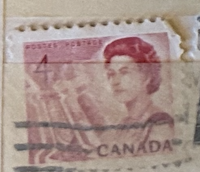
| SOURCE | TITLE| IMAGE MATCH | click to source page |
| Colnect | Canada : Stamps [Year: 1973] [1/18] : Colnect 📮 | 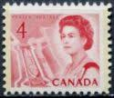 |
| HipStamp | Canada 457 Queen Elizabeth II 4¢ 1967 | Canada, General Issue Stamp / HipStamp | 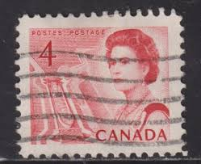 |
| eBay | 1967 LUNDBRECK FALLS OLD MAN RIVER ALBERTA CANADA POSTCARD POST CARD CRANBROOK | eBay | 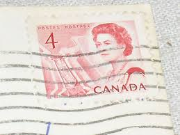 |
| eBay | CANADA NO 467 COIL, FVF MINT NH | eBay | 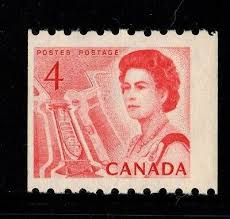 |
| Stamp Bears | Canada Queen Elizabeth II Centennial | Stamp Bears | 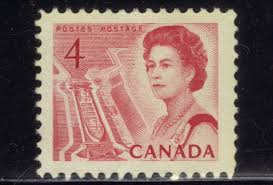 |
| Mystic Stamp Company | 457 - 1967 Canada - Mystic Stamp Company | 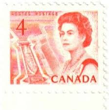 |
| Stampsandcanada | Stampsandcanada - Misperforation (misperf or perforation shift) - Errors, freaks and oddities on canadian stamps | 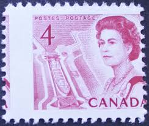 |
| eBay | 1961-1970 Year of Issue Canadian Stamp Blocks & Multiples for sale | eBay | 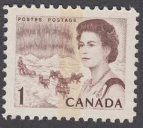 |
| Shutterstock | 92+ Thousand 1947 Canadian 4 Cent Stamp Royalty-Free Images, Stock Photos & Pictures | Shutterstock | 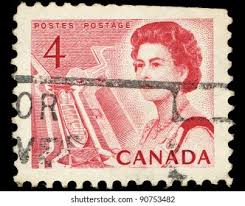 |
| Shutterstock | 22 Her Majesty Canadian Ship Royalty-Free Images, Stock Photos & Pictures | Shutterstock | 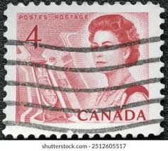 |
| Todocolección | canada 2014 fauna. crias. usado. - Compra venta en todocoleccion | 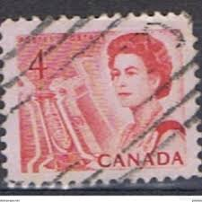 |
| allnumis.com | 5¢ Royal Visit 1959, Queen Elizabeth II - Canada - Stamp - 5239 | 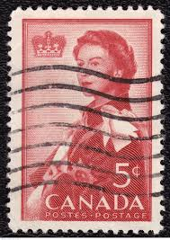 |
| eBay | (F18-5) 1967 Canada 4c red QEII stamp MUH (E) | eBay | 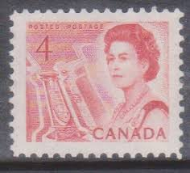 |
| Dreamstime.com | 411 Canadian Cent Stock Photos - Free & Royalty-Free Stock Photos from Dreamstime | 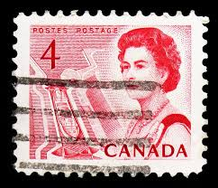 |
| Shutterstock | Canada Circa 1957 Used Postage Stamp Stock Photo 710712292 | Shutterstock | 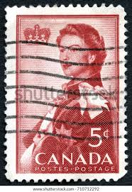 |
| Dreamstime.com | 644 Old Queen Sketch Stock Photos - Free & Royalty-Free Stock Photos from Dreamstime | 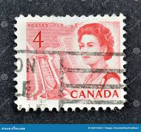 |
| Linns Stamp News | The story of Thanksgiving comes to life on postage stamps | 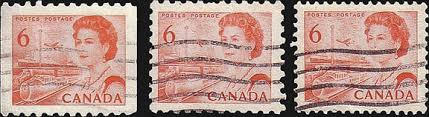 |
| Shutterstock | 1950s Stamps: Over 976 Royalty-Free Licensable Stock Photos | Shutterstock | 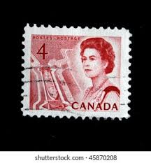 |
| Alamy | SEATTLE WASHINGTON - May 8, 2020: Engraved 1971 Queen Elizabeth definitive Canadian stamp featuring Library of Parliament. Scott # 544 Stock Photo - Alamy | 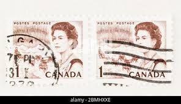 |
| eBay | Canada Postage ~ Queen Elizabeth II ~ Red 3¢ Stamp ~ Cancelled/Posted ~ Y70 | eBay | 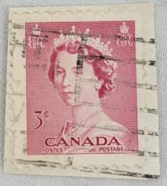 |
| zeboose.com | British American Bank Note Company – ZEBOOSE.COM | 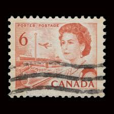 |
| vividagallery.com | Canada Queen Elizabeth II St Lawrence Seaway Shipping Canal Postage Stamp Shower Curtain by Vivida Photo - Vivida Photo | 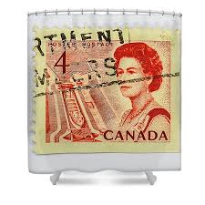 |
| eBay | Queen Elizabeth II, Mid-Canada Seaway View - 4 cents 1967 - Canadian stamp | eBay | 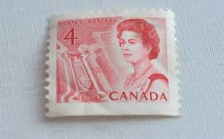 |
| Alamy | Canada flag face hi-res stock photography and images - Page 8 - Alamy | 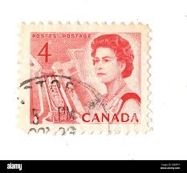 |
| eBay | Canada 1967-73, # 467, 4c Seaway coil stamp MNH, Mi 401C 2,5€ | eBay | 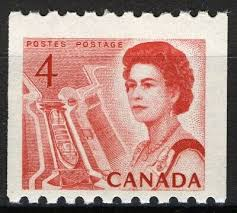 |
| Alamy | Queen canada 1967 hi-res stock photography and images - Alamy | 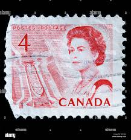 |
| eBay | Canada Postage ~ Queen Elizabeth II ~ Red 3¢ Stamp ~ Cancelled/Posted ~ Y67 | eBay | 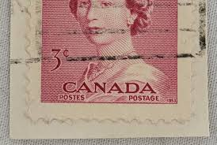 |
| eBay | Montreal Expo '67 Artist's Model Rendition of 1963 Postcard Vintage c1967 V3244 | eBay | 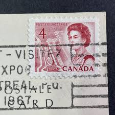 |
| Alamy | English: This ship portrait shows the vessel in two positions, port-broadside and port-quarter in the distance. She is called a snow rather than a brig, because her gaff-sail is laced to | 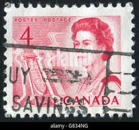 |
| eBay | Canada Foreign Stamps 4c & 68c Used - #A89 | eBay | 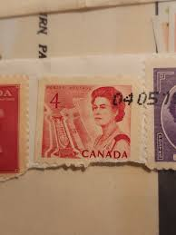 |
| eBay | Canada Queen Elizabeth II 1967 Stamp - Red | eBay | 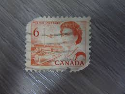 |
| Dreamstime.com | Rav Wilding editorial photo. Image of featureflash, arriving - 21785786 | 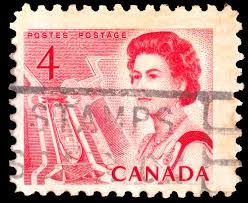 |
| The Itty Bitty Stamp Company | Canada Scott # 386 MNH – The Itty Bitty Stamp Company | 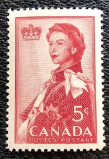 |
| eBay | Canada Postage ~ Queen Elizabeth II ~ Red 3¢ Stamp ~ Cancelled/Posted ~ Y69 | eBay | 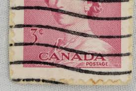 |
| eBay | CANADA 1867 1967 QUEEN ELIZABETH MINT FV FACE 25 CENT MNH STAMP BOOKLET GEM NEW! | eBay | 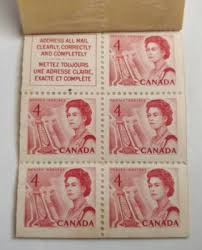 |
| eBay | The Festival Theatre, Stratford, Ontario, Canada Vintage Postcard | eBay | 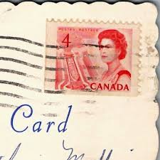 |
| Colnect | Canada : Stamps [Year: 1969] [1/13] : Colnect 📮 | 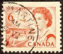 |
| Lee Stamp Sales | Lee Stamp Sales | Corner Blocks | 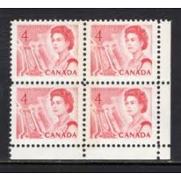 |
| eBay | Vintage Postcard,NEW ORLEANS, LA,1968, Bourbon Street A Night,Navy Mail,RCN,HMCS | eBay | 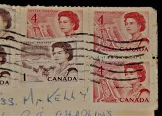 |
| Dreamstime.com | 167 Service Canada Envelope Stock Photos - Free & Royalty-Free Stock Photos from Dreamstime | 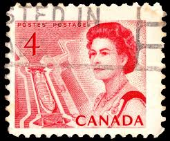 |
| eBay | CANADA LOT OF 3 PARTIALLY FULL MINT STAMP BOOKLETS FEATURING QUEEN ELIZABETH II | eBay | 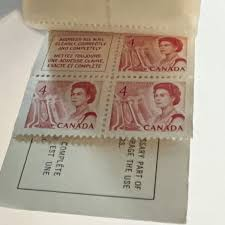 |
| eBay | CANADA 1967 CENTENNIAL 6¢ ORANGE STRAIGHT EDGE SHARP & ELUSIVE *HIBRITES $105.00 | eBay | 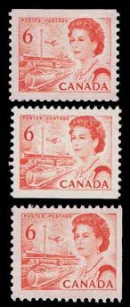 |
| eBay | Canada #467iv Very Fine Never Hinged Dramatic Misperf Pair | eBay | 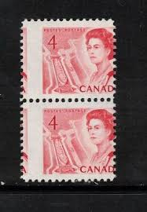 |
| eBay UK | Canada - 1968 - The 100th Anniversary Celebration - 6¢x4 - #2148 | eBay UK | 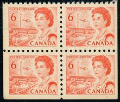 |
| eBay | Canada Scott 457 UL Pl #3 Blk of 6 MNH - 1967-72 Centennial Issue | eBay | 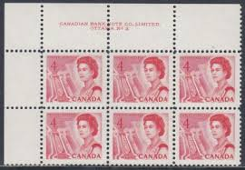 |
| eBay | 459ii VF MNH CV $50.00 Canada Mint | eBay | 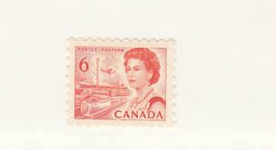 |
| Alamy | Queen elizabeth stamp canada hi-res stock photography and images - Page 3 - Alamy | 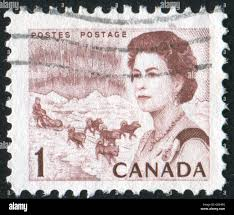 |
| Stampsandcanada | Stampsandcanada - Queen Elizabeth II, Mid-Canada Seaway View - 4 cents 1967 - Stamps of Canada - Price guide and value | 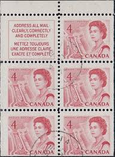 |
| eBay | 2x CANADA 1967 QUEEN CENTENNIAL MINT FV FACE 32 CENT CARMINE MNH STAMP BLOCK LOT | 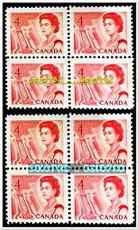 |
| Stamp Bears | Canada Queen Elizabeth II Centennial | Stamp Bears | |
| eBay | Canada Postage ~ Queen Elizabeth II ~ Red 3¢ Stamp ~ Cancelled/Posted ~ W02 | eBay | |
| eBay | Foreign Stamp 5c Canada used - #7247 | eBay | |
| eBay | Canada 4 cent stamp 1963 #404 Queen Elizabeth II Cameo Issue Tower Used TKS357* | eBay | |
| eBay | Canada Scott 459b LL Pl #3 MNH - 1967-72 Centennial Issue | eBay | |
| eBay | Canada Stamp Booklet, Scott 454c MNH | eBay | |
| eBay | Canada #454p-460cp, Centennial Definitives Low Value, Tagged Set MNH 1967-1973 | eBay | |
| HipStamp | Browse Products in Canada / HipStamp | |
| eBay | Canada #SG594 MNH 1969 QEII Centennial Coil Transport [468A] | eBay | |
| eBay | Canada Scott 457 MS Pl #1 MNH - 1967-72 Centennial Issue | eBay | |
| eBay | Canada Scott 468A Coil Strip of 4 MNH - 1967-72 Centennial Issue | eBay |